Case Study · 01 · Sky Glass
Curating the household TV experience
The Brief
TV has always been a shared thing, with around 90% of Sky Glass households watching together. But expectations were changing. Platforms like Netflix had made personal Profiles feel like the norm, and people were starting to expect that sense of ownership everywhere.
Sky Glass is a household device though, not a personal one. So the challenge became: how do we bring that feeling of "this is mine" into Playlist without breaking the shared experience that makes Sky Glass what it is?
The tricky part? When people hear "personalisation", they think recommendations, resume points, algorithms. The full treatment. We couldn't deliver that. Not yet. So we had to find a way to offer something genuinely useful without overpromising.
"Deliver value through organisation first, not algorithmic complexity, while laying the foundations for future evolution."
01
Problem
As Playlist libraries grow, shared lists become congested and hard to navigate, but the TV is still primarily a shared device.
How might we introduce personalisation without disrupting shared living room viewing?
02
Problem
Users associate "personalisation" with fully-fledged profiles, recommendations, resume points, algorithmic tailoring. We couldn't deliver that. Not yet.
How might we deliver meaningful value through curated lists while clearly setting expectations?
My Role
End-to-end ownership, from shaping the research approach and running workshops, through to prototyping, testing, and final shipped UI. Every stage, not just the design bit in the middle.
Process & Methods
We worked in a structured but iterative way, and the methods we chose mattered. Each one was picked to answer a specific question at the right time, not just to tick a process box.
01
Discover
Before we could generate ideas, we needed to understand what was actually happening, not what we assumed was happening. User needs studies and household dynamics research gave us a grounded starting point.
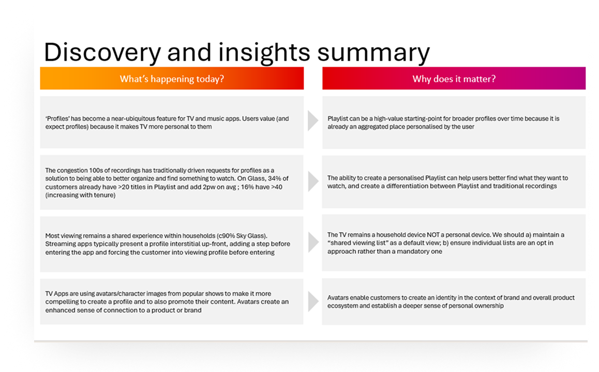
02
Define
With competing priorities pulling in different directions, we needed clear principles to help us make decisions confidently. Problem framing and opportunity mapping helped us land on what we were actually trying to solve.
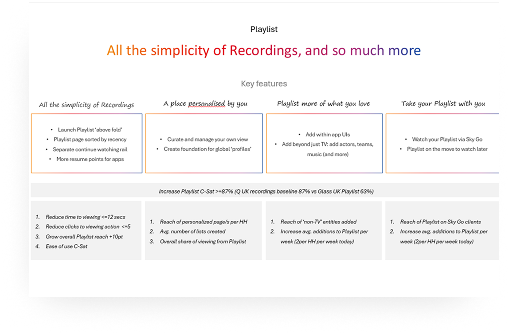
03
Ideate & Design
We started with sketches and low-fi concepts to get a range of ideas on the table quickly, before moving into high-fidelity UI. Running multiple concepts in parallel meant we weren't betting everything on a single direction.
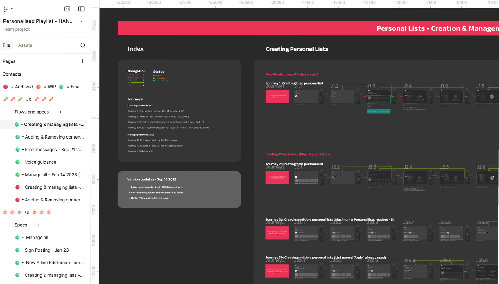
04
Test & Deliver
Testing on real Sky Glass hardware was non-negotiable. Remote interaction patterns behave completely differently to touch, something that only becomes obvious when you watch someone actually use it on their sofa.
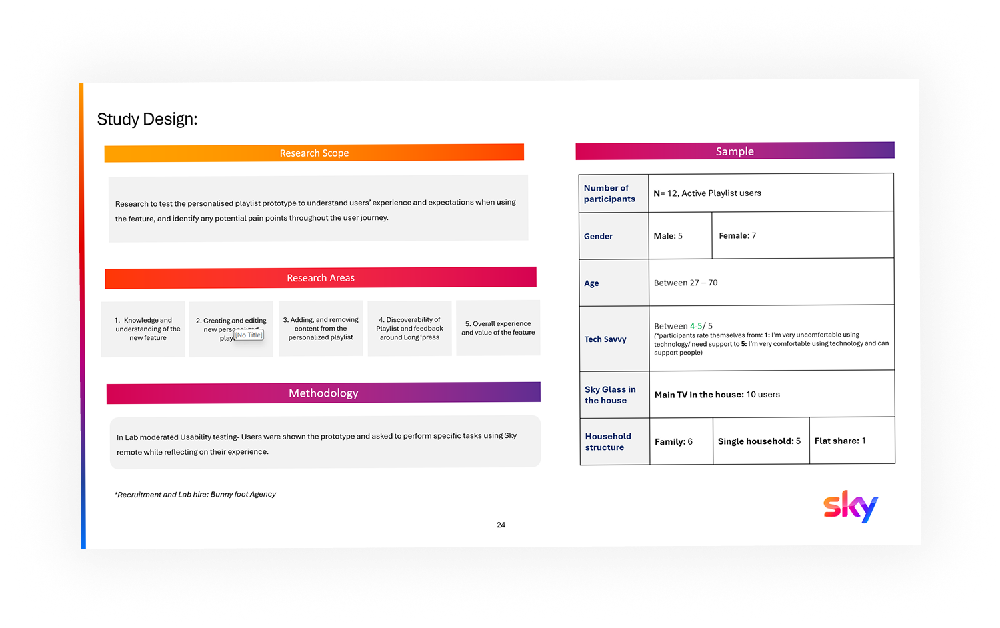
Discovery & Insights
We ran user needs studies and dug into behavioural data to understand how people were really using Playlist, not how we hoped they were using it. A few things stood out clearly.
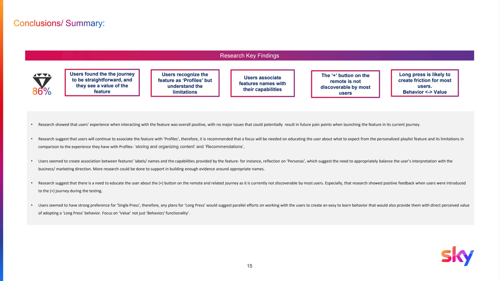
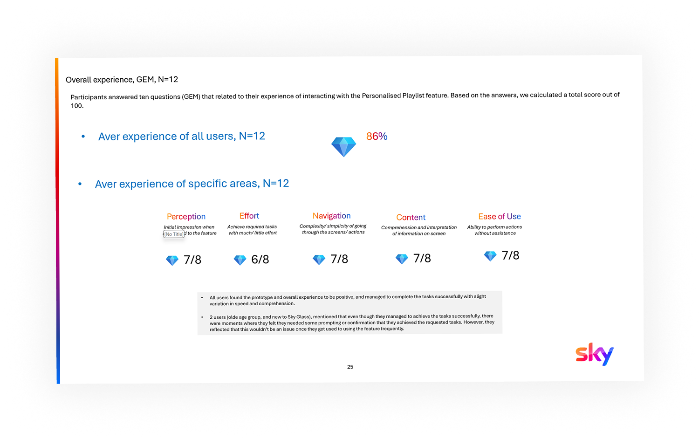
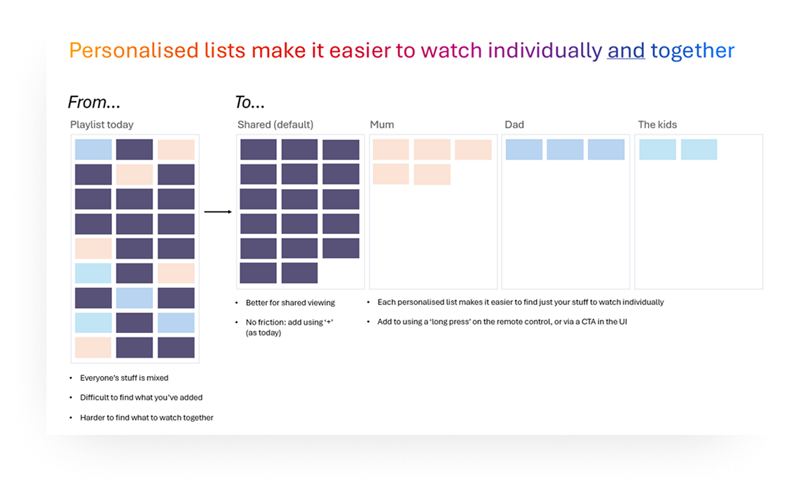
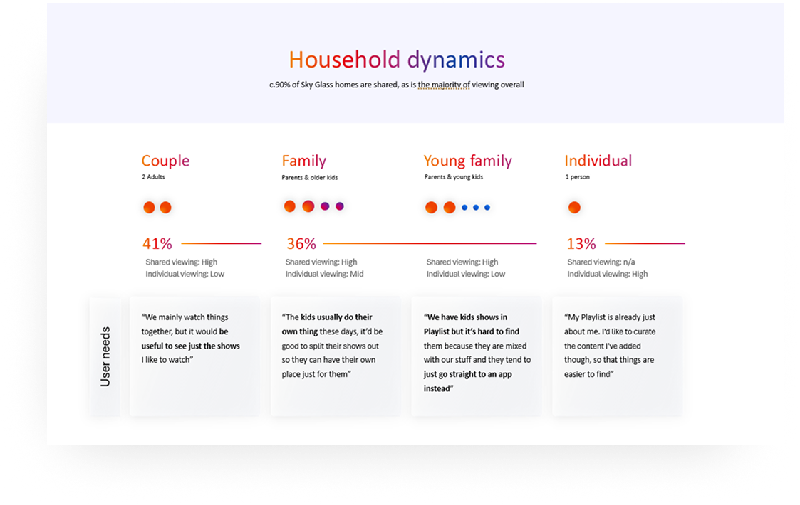
Ideation
Full Profiles were the obvious answer, but resume points weren't technically possible at this stage, which meant promising a full personalisation system would have set expectations we couldn't meet. The real tension throughout this project was that gap: between what users associated with personalisation and what we could actually deliver. So before converging, we pushed ourselves to question whether Profiles was even the right framing at all.
We looked at full household profiles (too much friction for a shared device), a tag-based filtering system (way too complex for remote navigation), a simple "My List" shortcut layer (promising, but limited), and ultimately landed on the layered Shared + Personal model, the one that actually balanced simplicity with something meaningful.
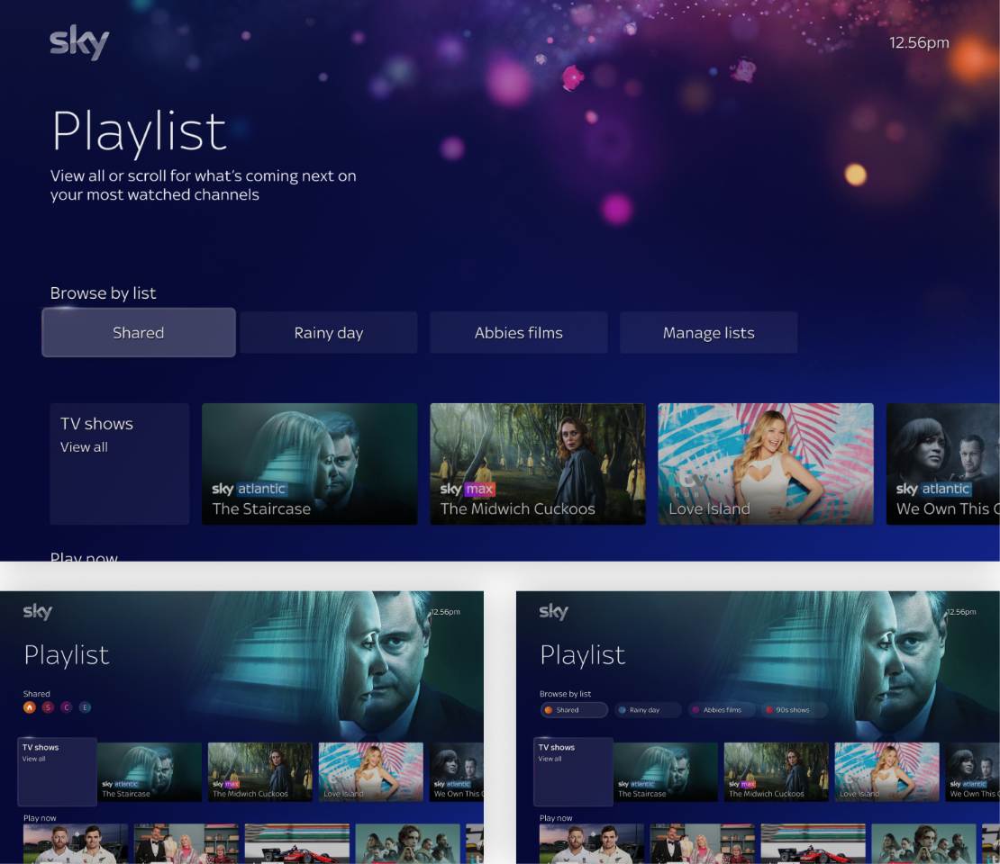
We ran each concept against our four design principles and pushed hard on the 90% shared-household insight. If an idea required people to step away from the shared experience, it was out. Avatar-based identity emerged as the lightest-weight way to give people a personal feeling without building a full profile system.
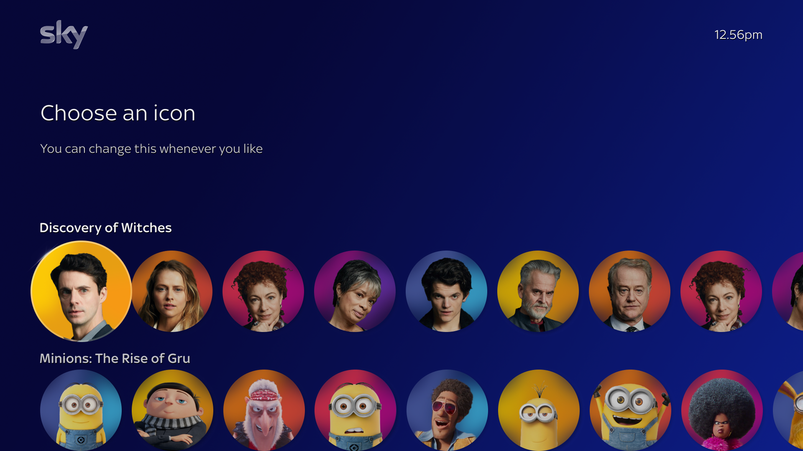
"The question wasn't 'how do we build Profiles?', it was 'what is the minimum meaningful personalisation that doesn't fragment the household experience?'"
Design Principles
These weren't just nice-sounding statements on a slide. They were working tools, used constantly throughout the project to make decisions and settle debates when opinions diverged.
01
Shared by default
The household playlist remains the anchor, nothing disrupts communal viewing as the primary ritual. Every design decision was tested against this.
02
Opt-in personalisation
Personal lists are additive and voluntary. No forced interstitials. No friction on the path to watching. Users come to watch, not to manage.
03
Low-friction remote interaction
Single-press interactions throughout. Designing for a remote control is fundamentally different to touch, every additional step has an outsized cost on the sofa.
04
Clear expectation setting
Naming and copy were critical to position this as organisational, not algorithmic, avoiding the trust erosion that comes from overpromising personalisation.
Testing & Validation
We tested early and often. Starting at low fidelity meant we could validate the direction before investing in the detail, then refine as we moved up to higher fidelity prototypes.
01
Long Press was consistently perceived as confusing and unexpected on a TV remote. Single Press won clearly and became the foundational interaction pattern.
02
Users responded positively to avatar-based identity as a lightweight ownership signal, without triggering expectations of full profile features that "Profiles" language would have.
03
Language implying algorithmic personalisation consistently set the wrong expectations. The final naming was validated to feel organisational rather than predictive.
04
Users understood the layered model clearly when framed correctly. Personal list creation created no confusion around the shared list.
Prototype testing session
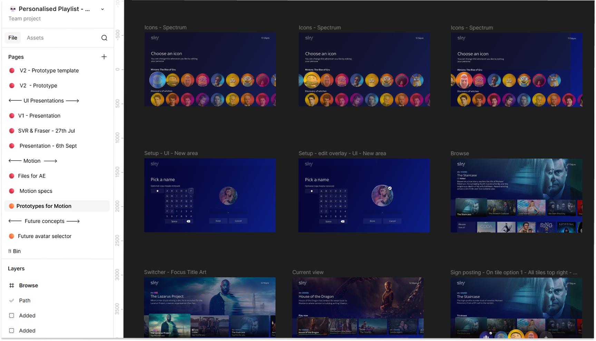
Figma prototype pages overview
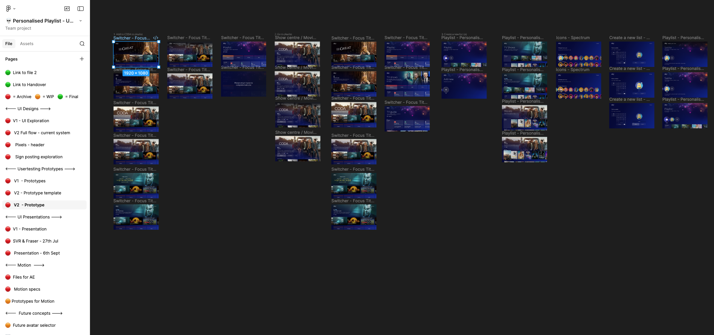
High fidelity prototype
Customer & Business
There was a real tension to navigate here. The business case for personalisation was strong: more engagement, a point of difference from competitors, and a hook for future features. But our research was pretty clear that forcing a full profile model would chip away at the household experience that made Sky Glass distinctive.
People wanted Playlist to feel like theirs, without having to switch profiles or manage a separate identity every time they sat down to watch. Organisation was the real gap, not algorithms. I kept coming back to the research to hold that line, especially when conversations veered towards building something more complex.
Rather than framing this as a compromise, I made the case for it being a foundation. By building the system with future flexibility in mind, we delivered something genuinely useful now while leaving the door open for deeper personalisation down the line. That's a much easier sell than asking people to wait for perfection.
"I made the case that a simpler, trusted feature used daily was more strategically valuable than a complex one that eroded confidence in the platform."
The Concept
What we landed on was a layered system, one that kept the shared experience at the centre while making room for a bit of personal organisation on the side:
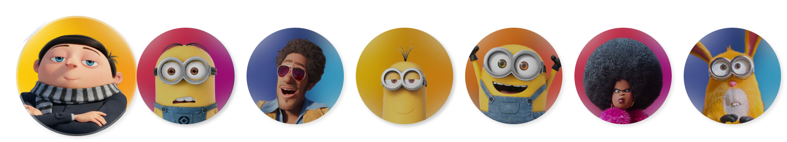
Collaboration
This was a proper team effort from day one. Doing it well meant staying in sync across research, product, engineering and copy, and making sure the right people were involved at the right moments.
I worked closely with the research team to shape the study from the ground up, and the quality of our findings depended on asking the right questions, not just any questions. Copy were involved throughout, because naming and language turned out to be just as important as the visual design. Engineering came in early too, so we weren't designing anything that couldn't actually be built.
I ran regular show-and-tells with product leadership and used the research as my main tool for making design decisions land. When there was pressure to speed up or cut testing rounds, I made the case, backed by data, for why those moments were worth protecting. Getting buy-in on the principles early meant far fewer debates later on.
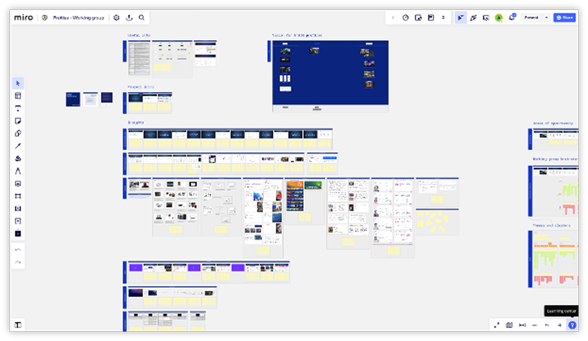
Working group Miro board
Figma prototype pages overview
Measuring Success
We were looking at three things: did it work for people straight away, did it stick around, and did it open doors for what came next.
01
Users successfully created and managed personal lists without instruction. Single-press interactions passed with high confidence across multiple test cohorts.
02
Playlist was not deprecated. Sky continued building new UI layers and personalisation features on top of the foundation, a strong signal that the feature delivered lasting value.
03
Syndication partners expressed desire to continue building on the feature, validating its international relevance and scalability beyond the initial UK market.
04
The interaction patterns were adopted into voice, avatars and manage-all features, demonstrating that the underlying model was extensible, not a one-off solution.
Honest Reflection
Learnings & Reflections
Design principles are most valuable when they're genuinely constraining
The four principles we defined weren't aspirational, they actively ruled things out. "Shared by default" killed several concepts that might otherwise have gone around in circles for weeks. I'll always set these earlier now; the sooner they're in place, the more useful they are.
Language is design, naming deserves the same rigour as interaction
The difference between "Profiles" and what we shipped was as much a naming problem as a UX one. I came away from this project with a much stronger instinct for getting copy involved early and treating language decisions with the same care as interaction decisions.
Designing for simplicity at scale requires defending it continuously
There were so many moments where complexity tried to creep back in: extra features, edge cases, "just one more option." Being able to say no, and backing it up with user data, turned out to be just as important as any design decision I made.
Platform constraints are a creative tool, not just a limitation
Designing for a TV remote pushed us to think much harder about every interaction than we would have on touch. The constraint of single-press interactions actually produced a cleaner, more considered solution than a more open environment might have allowed. Constraints can be a gift.
Building for extensibility pays back over time
Designing this as a foundation rather than a finished product proved to be the right call. Years later, the patterns and infrastructure are still being built on. That's the kind of outcome that matters to me, something that outlasts the brief it was built for.